2 Introduction à la linguistique diachronique
3 Linguistique vs grammaire
3.0.0.1 Le lemme linguistique dans le TLFi
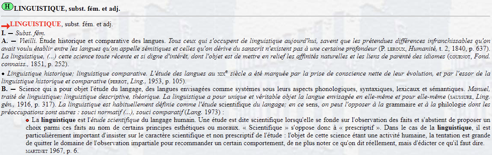
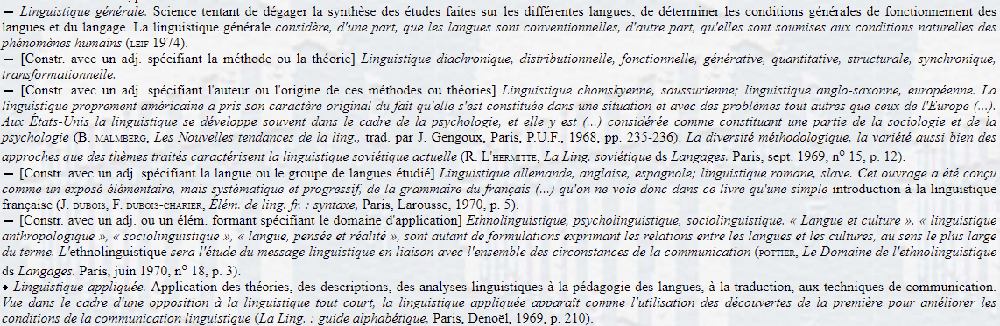
3.0.0.2 Le lemme grammaire dans le TLFi
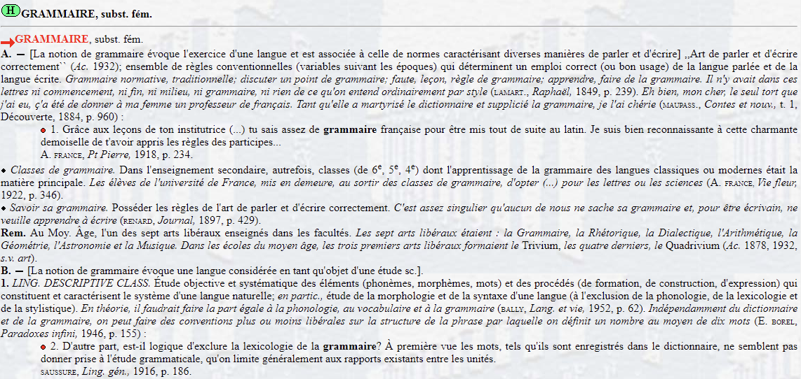
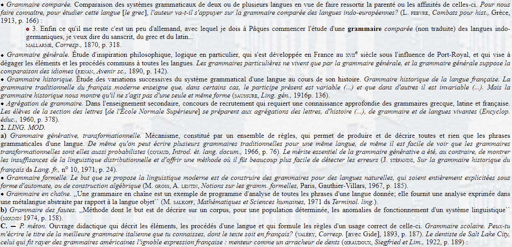
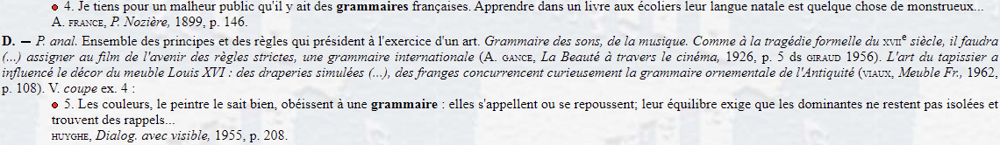
3.1 Linguistique vs grammaire :
- deux disciplines scientifiques ayant pour objet d’étude la langue « sous différents aspects »
3.1.1 Quatre différences fondamentales :
Objet d’étude
Objectif poursuivi
Organisation de la description
Terminologie utilisée
3.1.2 Objet d’étude
Toute variété linguistique se définit par un faisceau unique de variables diasystémiques :
3.1.2.1 Les dimensions de la variation
3.1.2.1.1 Variation diachronique
Exemple : Les Serments de Strasbourg (842) vs français moderne
| Très ancien français | Français moderne |
|---|---|
| Pro Deo amur et pro christian poblo et nostro commun salvament, d’ist di in avant, in quant Deus savir et podir me dunat, si salvarai eo cist meon fradre Karlo et in aiudha et in cadhuna cosa, si cum om per dreit son fradra salvar dift, in o quid il mi altresi fazet (…). | Pour l’amour de Dieu et pour le salut du peuple chrétien et notre salut commun, de ce jour en avant, autant que Dieu m’en donnera le savoir et le pouvoir, je défendrai mon frère Charles, et l’aiderai en toute circonstance, comme on doit selon l’équité défendre son frère, pourvu qu’il en fasse autant à mon égard (…). |
Exemple : négation ancien français vs contemporain
Jeo ne mange.
Je ne mange pas.
Je mange pas.
3.1.2.1.2 Variation diatopique
Exemple : Variation phonétique Paris vs Midi
| Paris 🗼 | Midi 🌞 |
|---|---|
| le lait → [lǝlɜ] | [lǝle] |
| aimerais / aimerai → [emʁɜ] / [emʁe] | [eməre] |
Exemple : Genre des emprunts anglais : France vs Canada
| Anglais 🇬🇧 | France 🇫🇷 | Canada 🇨🇦 |
|---|---|---|
| the job | le job | la job |
| the gang | le gang | la gang |
Exemple : Chiffres 70 et 90 : France vs Belgique/Suisse
| France 🇫🇷 | Belgique 🇧🇪 / Suisse 🇨🇭 |
|---|---|
| soixante-dix | septante |
| quatre-vingt-dix | nonante |
3.1.2.1.3 Variation diastratique
Langue des jeunes :
staïve, balec
stremon, meuf, tromé
3.1.2.1.4 Variation diaphasique
Registre soutenu vs familier
| Soutenu | Familier |
|---|---|
| Bonjour ! | Salut ! |
| Pas de problème. | Pas d’problème. |
| Je ne sais pas… | Je sais pas… |
| Il y a plusieurs façons de s’exprimer. | Y’a plusieurs façons de s’exprimer. |
| Arrivederla ! (it.) | Arrivederci ! Ciao ! (it.) |
3.1.2.2 Variation diamésique
Écrit vs oral
| Écrit ✍️ | Oral 💬 |
|---|---|
| Bonjour ! | Salut ! |
| Il y a plusieurs façons… | Y’a plusieurs façons… |
3.1.2.3 Paramètres diasystémiques = scalaires
Exemple : L’évolution de la langue cristallisée dans Les Serments de Strasbourg (842)
Latin classique (IIe s. av. J.-C. - IIe s. apr. J.-C.)
> Per Dei amorem et per christiani populi et nostram communem salutem, ab hac die, quantum Deus scire et posse mihi dat, servabo hunc meum fratrem Carolum, et ope mea et in quacumque re, ut quilibet fratrem suum servare iure debet (…).Très ancien français (IXe - XIe s.)
> Pro Deo amur et pro christian poblo et nostro commun salvament, d’ist di in avant, in quant Deus savir et podir me dunat, si salvarai eo cist meon fradre Karlo et in aiudha et in cadhuna cosa, si cum om per dreit son fradra salvar dift, in o quid il mi altresi fazet (…).Français contemporain (XXIe s.)
> Pour l’amour de Dieu et pour le salut du peuple chrétien et notre salut commun, de ce jour en avant, autant que Dieu m’en donnera le savoir et le pouvoir, je défendrai mon frère Charles, et l’aiderai en toute circonstance, comme on doit selon l’équité défendre son frère, pourvu qu’il en fasse autant à mon égard (…).
Exemple : Le continuum diatopique
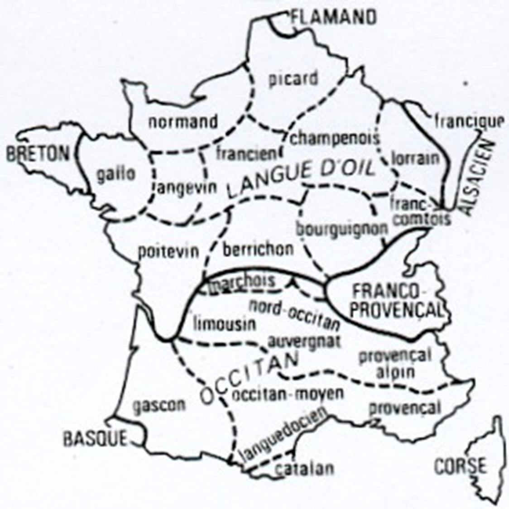
Exemple : le continuum diamésique/diaphasique/diastratique entre le latin écrit et le latin parlé véhiculaire :
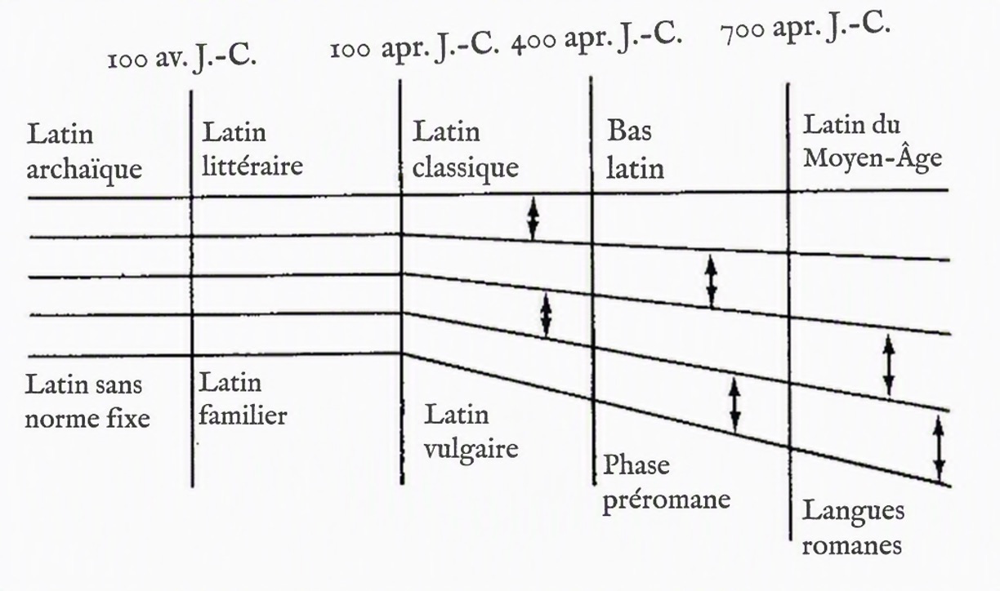
Le latin vulgaire comme :« the usage, particularly but not exclusively spoken, of the Latin-speaking population who were little or not at all influenced by school education and by literary models » Herman (2000)
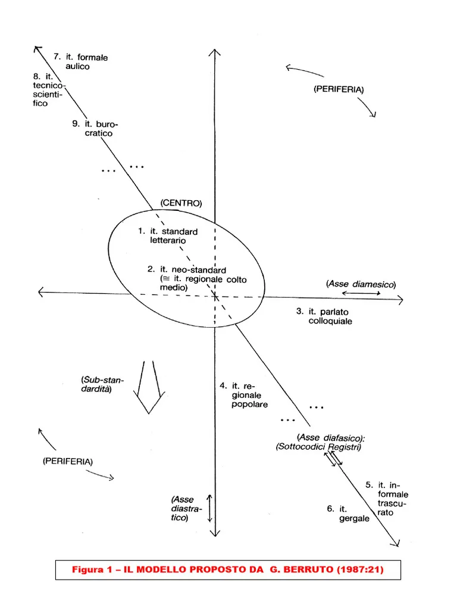
3.2 Et alors, quelles variétés étudie-t-on?
- Linguistes : toutes les variétés
- Grammairiens : langue écrite des « bons écrivains »
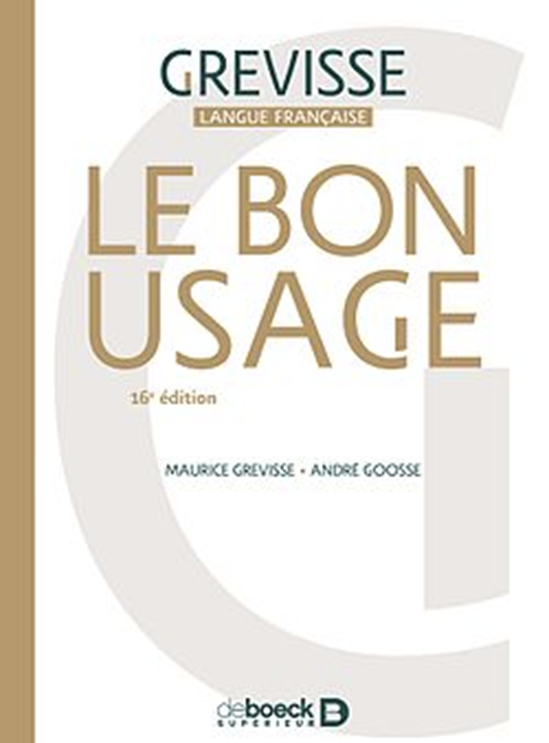
3.2.0.1 Conséquences pour la grammaire
Les grammairiens décrivent un bon usage basé sur une variété écrite, souvent en décalage avec l’usage réel.
3.2.0.1.1 Décalage diachronique
« La faute d’aujourd’hui est la norme de demain. » — Alain. Rey
3.2.0.1.2 Variété très circonscrite
Les variétés de langue qui diffèrent de la langue écrite des bons écrivains dévient donc forcément des règles grammaticales établies pour la période et le territoire concernés
Ex. : l’expression de la négation en français contemporain :
| Règle grammaticale | Registre informel |
|---|---|
| Morphème discontinu | Morphème simple |
| ne pas rien plus jamais … |
Ø pas rien plus jamais |
| Finalement, les picards peuvent regretter leur début de période raté, en espérant que cela ne coûtera pas le match, en définitive. | Je le dis à chaque match : que fait Pavard dans cette équipe ? J’ai rarement vu un latéral autant à la ramasse que lui. J’espère qu’il coutera pas le match […]. |
3.2.0.2 Double constat :
- Variétés de langue contenant beaucoup de déviations des règles grammaticales : langue parlée, registres moins formels, langue des jeunes, centres urbains, etc.
- Variétés de langue privilégiées du déclenchement du changement linguistique : les mêmes variétés
3.3 Les déviations des règles grammaticales et le changement linguistique ?
- Ces déviations (« innovations ») préfigurent le changement linguistique
- Changement linguistique = conventionnalisation d’une innovation, c.-à-d. d’une déviation d’une règle grammaticale ancienne
3.3.0.1 Deux questions principales en linguistique historique
- Comment les langues changent-elles ? Comment le changement linguistique se réalise-t-il ?
- Comment les déviations des règles grammaticales se conventionnalisent-elles ? Comment la faute d’aujourd’hui devient-elle la norme de demain ?
3.4 Objectif poursuivi par la linguistique historique
3.4.1 Deux objectifs :
Grammairien : prescriptif / normatif
Linguiste : descriptif / explicatif
3.4.2 Attitude face aux déviations :
Grammairien → fautes
Linguiste → alternatives à décrire
3.5 Exemple n°1 : la négation
3.5.1 Pas
**Latin vulgaire** * Non vado. *(NEG tonique)* * NEG aller.PRS.1SG * *‘Je ne vais pas.’*
**Ancien français (contexte neutre)** * Ne vais. *(NEG tonique)* * NEG aller.PRS.1SG * *‘Je ne vais pas.’*
**Ancien français (contexte emphatique)** * Ne vais (un) pas. *(NEG clitique)* * NEG aller.PRS.1SG (un) pas *(pas : intensificateur optionnel)* * *‘Je ne vais pas du tout.’* *(> contagion sémantique de pas)*
**Français médiéval (contexte neutre)** * Ne mange pas. *(NEG clitique)* * NEG manger.PRS.1SG NEG *(perte du sens source de pas)* * *‘Je ne mange pas.’* *(pas moins emphatique)*
**Français moderne standard** * Je ne mange/vais pas. *(NEG1 clitique)* * je NEG manger/aller.PRS.1SG pas *(pas obligatoire)* * *‘Je ne vais pas.’* *(contagion complète de pas)*
**Français moderne véhiculaire** * Je mange/vais pas. *(ellipse de NEG1)* * je manger/aller.PRS.1SG pas *(preuve de contagion complète)* * *‘Je ne vais pas.’* *(pas garde place d’origine)*
3.5.2 Mie
**Latin vulgaire**
* Non manduco. *(NEG tonique)*
* NEG manger.PRS.1SG *
*‘Je ne mange pas.’*
**Ancien français (contexte neutre)**
* Ne mange. *(NEG tonique)*
* NEG manger.PRS.1SG *
*‘Je ne mange pas.’*
**Ancien français (contexte emphatique)**
* Ne mange mie (de pain). *(NEG tonique)*
* NEG manger.PRS.1SG miette (de pain) *(pas : intensificateur optionnel)* *
*‘Je ne mange rien du tout.’* *(> contagion sémantique de mie)*
**Français médiéval (contexte neutre)**
* Ne vais mie. *(NEG1 clitique)*
* NEG aller.PRS.1SG NEG *(perte du sens source de mie)* *
*‘Je ne vais pas.’* *(mie moins emphatique)*
**Français moderne (vieilli, contexte neutre)**
* Je te prie de ne compter mie sur moi, dimanche […]. *(NEG1 clitique)* * (Mallarmé, *Corresp.*, 1862, p.30)
*(mie obligatoire)*
*(contagion complète de pas)*
3.6 Exemple n°2 : le genre de espèce
3.6.1 Questions :
Quel est son genre ?
Quel est son emploi réel ?
Attitude grammairien vs linguiste
Explication de l’emploi déviant
3.6.2 Référence grammaticale
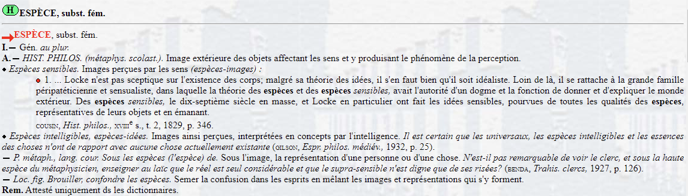
3.6.3 Les données réelles
Observez les exemples ci-dessous et dégagez-en les règles qui régissent le genre du mot espèce.
Une espèce de con.
Une espèce de crapule.
Un espèce de moteur.
Une espèce de voiture.
Un espèce d’individu.
Une espèce de fleur.
Un espèce de problème.
3.6.4 La réponse du grammairien
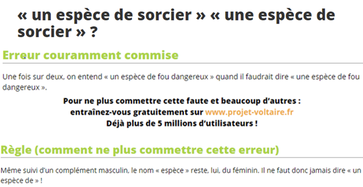
3.6.5 La réponse du linguiste
3.6.5.1 1e étape : description du phénomène
Malgré son genre inhérent qui est le féminin, le genre du mot espèce tend à varier
Le genre du mot espèce ne varie que dans la construction [DET espèce de N] :
Il ne connaît pas cette espèce.
*Il ne connaît pas cet espèce.
Le genre du mot espèce peut être féminin peu importe le genre du N qui suit la préposition de :
Une espèce de voiture.
Une espèce de problème.
Le genre du mot espèce peut être masculin seulement si le genre du N qui suit la préposition de est masculin :
Un espèce de problème.
*Un espèce de voiture.
3.6.5.2 2e étape : explication du phénomène
Les noms ont un genre inhérent qui n’est souvent visible que sur la morphologie des éléments qui en dépendent et qui sont variables :
Table.
La table.
L’artiste.
L’artiste est triste.
L’artiste douée.
Une vieille porte.
Les déterminants et adjectifs s’accordent en genre avec le nom auquel ils se rapportent :
Le père de Marie est heureux.
Il a rencontré le propriétaire de la voiture noire garée devant la mairie.
Quelle est la tête des SN suivants ?
1. Une espèce de con.
2. Une espèce de crapule.
3. Un espèce de moteur.
4. Une espèce de voiture.
5. Un espèce d’individu.
6. Une espèce de fleur.
7. Un espèce de problème.Au sein de la construction \([DET\textit{ espèce de }N]\), la fonction de tête tend à glisser vers le \(N\) qui suit la préposition de.
Qu’est-ce que cela implique pour l’analyse syntaxique de la construction \([DET\textit{ espèce de }N]\) et pour le statut du mot espèce ?
Au sein de la construction \([DET\textit{ espèce de }N]\), la combinaison du déterminant, du mot espèce et de la préposition de est en train d’être (morpho)syntaxiquement réanalysée comme un déterminant morphologiquement complexe dans lequel le mot espèce ne fonctionne plus comme un nom prototypique.
Se crée donc un nouveau déterminant à l’instar des déterminants complexes comme un tas de + \(N\), la plupart de + \(GN\), etc. (> grammaire émergente)
Réanalyse (morpho)syntaxique : “the change in the structure of an expression or class of expressions that does not involve any immediate or intrinsic modification of its surface structure” Langacker (1977) :
SN SN
/ \ / \
Dét GN Dét N
/ \ / \
N SPrép un espèce de problème
/ \
Prép N
une espèce de problèmeQuelle hypothèse pour le futur ? Deux scénarios récurrents :
Scénario 1 : compétition > remplacement d’une forme ancienne par une nouvelle forme (cf. Leech et al. 2009)$^6$ :
$$\text{Etat source} \xrightarrow{\hspace{6cm}} \text{Etat cible}$$
$$\begin{array}{lcccc} \text{Forme }\alpha & \quad & \text{Forme }\alpha & \quad & \\ & \quad & \text{Forme }\beta & \quad & \text{Forme }\beta \end{array}$$
Scénario 2 : compétition > maintien de la forme ancienne et de la nouvelle forme, mais spécialisation dans des contextes différents (cf. Torres Cacoullos & Walker 2009) :
$$\text{Etat source} \xrightarrow{\hspace{6cm}} \text{Etat cible}$$
$$\begin{array}{lcccc} \text{Forme }\alpha & \quad & \text{Forme }\alpha & \quad & \text{Forme }\alpha\text{ dans contexte }\alpha \\ & \quad & \text{Forme }\beta & \quad & \text{Forme }\beta\text{ dans contexte }\beta \end{array}$$
3.6.5.3 Résumé
espèce = féminin inhérent
Variation uniquement dans [DET espèce de N]
Masculin possible seulement si N est masculin
Réanalyse : une espèce de N → déterminant complexe
Évolution en cours : coexistence des deux formes
3.7 Linguistique synchronique vs diachronique vs historique
3.7.1 Synchronie
Synchronie > gr. σύν ‘avec’ (lat. syn) + χρόνος ‘temps’ (lat. chronos)
• La position de la femme en Europe au Moyen Age
• L’économie de la France au 21e s.
• L’expression de la négation en ancien français
• …
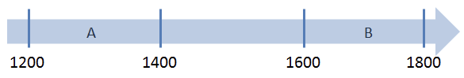
🚨 Synchronie du passé
3.7.2 Diachronie
Diachronie > διά ‘à travers’ (lat. dia) + χρόνος ‘temps’ (lat. chronos)
• La position de la femme en Europe du Moyen Age au XXe s.
• L’économie de la France du 19e au 21e s.
• L’expression de la négation de l’ancien français au français classique
• …
3.7.3 Opposition qui remonte à Ferdinand de Saussure
- Genève 🇨🇭
- Études de linguistique historique à l’Université de Leipzig, doctorat en 1879
- Mémoire sur le système primitif des voyelles indo-européennes (1877)
- 1881 : Maître de conférences à Paris
- 1892 : Université de Genève
- 1906–1913 : Chaire de linguistique générale
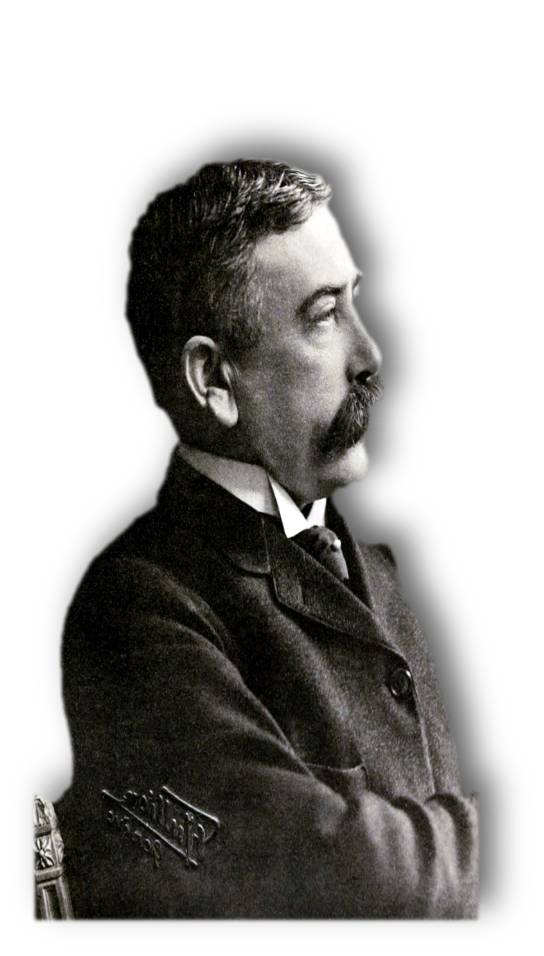
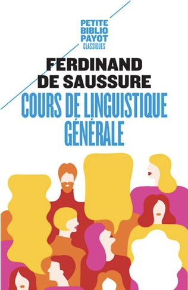
3.8 Linguistique historique ou diachronique ?
Linguistique diachronique : histoire interne de la langue
Ex. : l’évolution de l’expression de la négation en français
Linguistique historique : histoire externe de la langue :
Ex. : la théorie des strats en Gaule :
Substrat gaulois (celtique P)
Superstrat 1 latin (dès le 1er s. BC)
Adstrat francique (dès le 3e s. AD)
Superstrat 2 francique (Francs saliens)
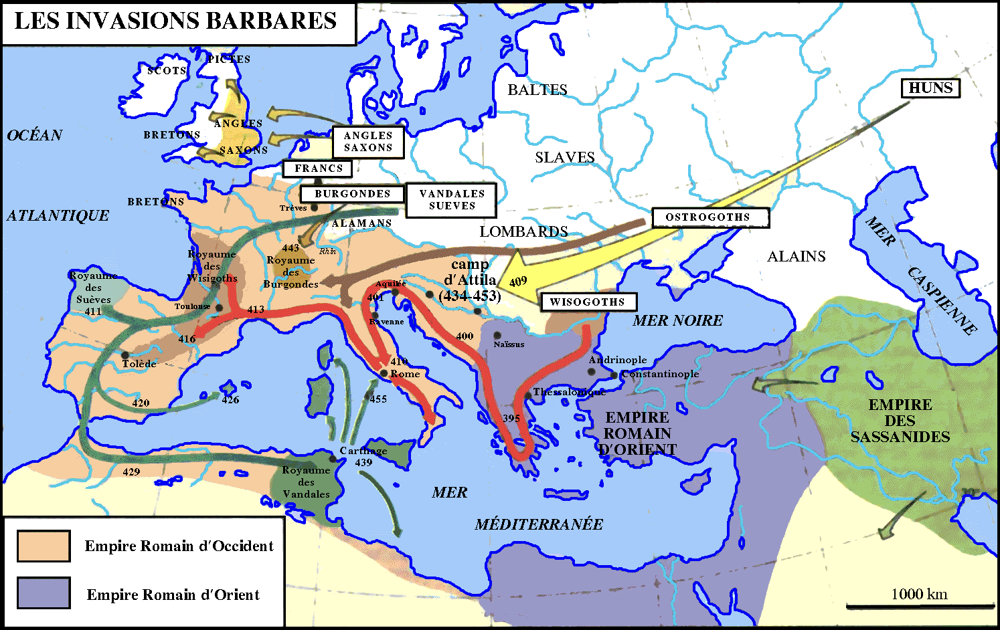
3.9 Intérêt de la linguistique diachronique
Évolution de la langue > fonctionnement de la langue et son emploi innovateur par ses locuteurs
Perspective diachronique comparative/typologique > évolutions récurrentes, corrélations entre évolutions, chronologie des évolutions en chaîne, … (> linguistique futuriste)
Cognition humaine et fonctionnement du cerveau humain
Meilleure compréhension de faits de langue en synchronie
Ex. : l’expression mono-morphématique de la négation en français moderne véhiculaire
Ex. : l’emploi « masculin » du mot espèce dans la structure [DET espèce de Nmasculin]
3.10 Perception du changement linguistique
3.10.1 XIXe siècle
« Plus on remonte dans le temps, plus la forme du langage est belle et parfaite. Plus on s’approche du présent, plus il est pénible de trouver au langage, en décadence, de la force et de la flexibilité. » (Jacob & Guillaume Grimm)

« Les langues à flexion qui sont tombées aujourd’hui en ruines ne pourront jamais de nouveau se relever à leur hauteur primitive. » (August Schleicher)

3.10.2 Perception traditionnelle
Primauté des langues classiques (grec ancien, latin, sanscrit, etc.)
La disparition de ces langues est déplorable : dégénération, décadence
Langues flexionnelles > langues non flexionnelles
Idéalisation des systèmes linguistiques du passé, mépris des systèmes linguistiques contemporains et désespoir des systèmes linguistiques futurs
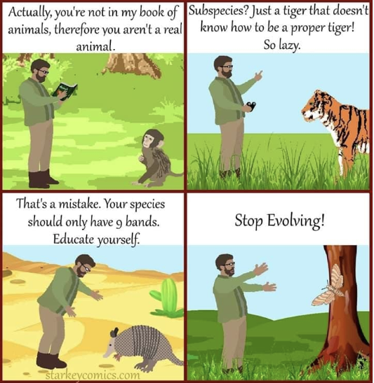
3.10.3 Aujourd’hui
\(\pm\) neutralité pour des changements dans le passé, mais attitude plutôt normative pour des changements actuels : « les jeunes d’aujourd’hui ne connaissent plus la grammaire, ils font des erreurs de syntaxe »
Votre attitude ?
Changement linguistique : signe d’une langue en vie
Aujourd’hui : le changement linguistique ne peut guère être arrêté pour au moins deux raisons :
La mondialisation : contact linguistique intensifié dans des proportions sans précédent, et à tous les niveaux de la vie quotidienne
Il a buggé ’il a perdu le nord’
Je l’ai complètement zappé ’je l’ai complètement oublié’
Diffusion extrêmement rapide de la production langagière écrite et orale non seulement dans une communauté linguistique donnée, mais dans le monde entier :
- Rôle crucial de l’Internet, des médias, des réseaux sociaux, …
- Diffusion rapide d’une innovation, qui est prête à être découverte, diffusée et imitée par des millions de locuteurs natifs ou apprenants dans le monde entier
Bilan : quelle attitude faudrait-il adopter face au changement linguistique ?
3.11 Difficultés de la linguistique diachronique
Besoin d’une base empirique : un corpus solide et représentatif de textes authentiques couvrant des périodes plus ou moins étendues > dépendance de la transmission textuelle
Problèmes :
Transmission textuelle pauvre, voire absente * Ex. langues exotiques, isolées
Documentation (relativement) récente (> absence de traces du passé)
Ruptures dans la transmission textuelle / périodes de transmission appauvrie * Ex. : les premiers stades des langues romanes
Documentation exclusivement écrite jusqu’au XXe s.
Sélection des textes transmis : * Duplication de textes : activité très chère, intensive et à refaire périodiquement
Sélection dans les types de textes copiés
Jusqu’à Gutenberg (1455) : duplication à la main par des copistes > interventions conscientes et inconscientes
Néanmoins : certaines langues ont une documentation diachroniquement impressionnante
- Ex. : le latin, les langues romanes, les langues germaniques
Langues romanes : la famille de langues la mieux documentée : transmission quasiment ininterrompue depuis leur émergence5/
Situation plus unique encore : langues romanes > latin donc documentation de plus de deux millénaires (3e s. BC – 21e s. AD) : diachronie large servant de laboratoire pour tester sur corpus des hypothèses formulées en linguistique générale et théorique (en plus : « shift typologique »)
Néanmoins : documentation relativement pauvre de la période de transition entre le latin et les langues romanes (le proto-roman, 600 – 800 AD)
Autres problèmes en linguistique diachronique :
- États de langue du passé : absence de locuteurs natifs (> pas de jugements de grammaticalité, de jugements d’acceptabilité, d’intuitions, de tests linguistiques, …)
- Risque de projeter ses propres intuitions sur un état de langue actuel sur des états de langue du passé (> distorsions, biais)
Actuellement : grand intérêt pour l’évolution du français (> plusieurs projets de recherche nationaux et internationaux)

3.3.0.2 Comment étudier ce qui conditionne le changement linguistique ?
La diachronie se définissant comme une succession de synchronies, la variation linguistique à un état de langue donné (i.e. en synchronie) reflète souvent un changement linguistique en cours.
si l’on observe la variation dans le présent, on peut comprendre d’où on vient et éventuellement où on va
Variation synchronique ➡️ hypothèses sur le changement linguistique ➡️ linguistique futuriste
Ex. l’expression de la négation en français ?
Le cycle de Jespersen
Ex. : le cycle de Jespersen (1917)
je NEG dire.PRS.1SG
‘Je ne dis pas.’
(ancien français)
je NEG voir.IMPF.1SG
‘Je ne voyais pas.’
(ancien anglais)
NEG lui.le=ai dit
‘Je ne lui ai pas dit.’
(italien standard / familier)
je NEG dire.PRS.1SG NEG
‘Je ne dis pas.’
(français moderne standard)
je NEG voir.IMPF.1SG NEG
‘Je ne voyais pas.’
(moyen anglais)
NEG lui.le=ai MICA dit
‘Je ne lui ai pas dit.’
(italien familier)
je dire.PRS.1SG NEG
‘Je ne dis pas.’
(français moderne véhiculaire)
je voyais NEG
‘Je ne voyais pas.’
(anglais moderne naissant)
lui.le=ai MICA dit
‘Je ne lui ai pas dit.’
(italien sous-standard / régional)
si on condisère la grammaire comme l’« ensemble de règles conventionnelles […] qui déterminent un emploi correct (ou bon usage) de la langue parlée et de la langue écrite » (TLFi) > conventionnalisation de régularités qui émergent de la langue telle qu’elle est utilisée par ses locuteurs dans des situations de communication précises
Ces règles sont « variables suivant les époques » (TLFi) : changements dans l’emploi de la langue par ses locuteurs > changements grammaticaux